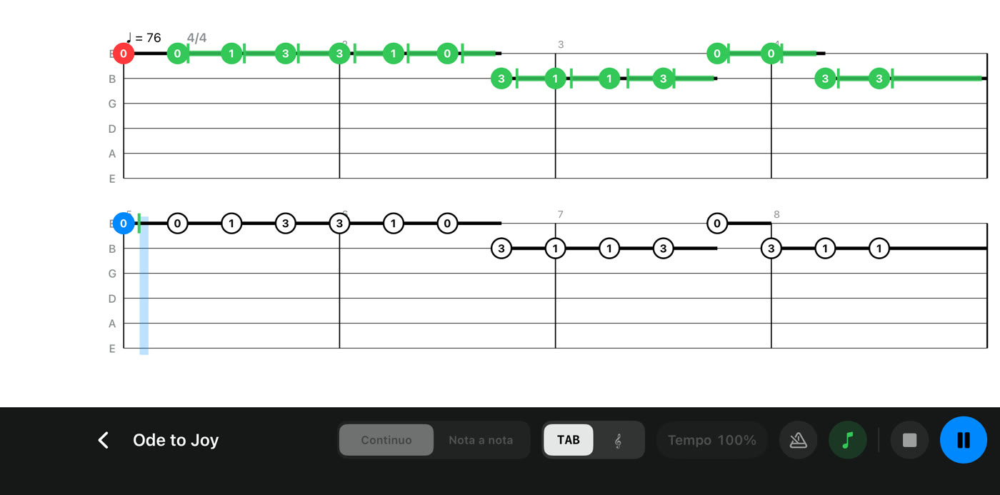
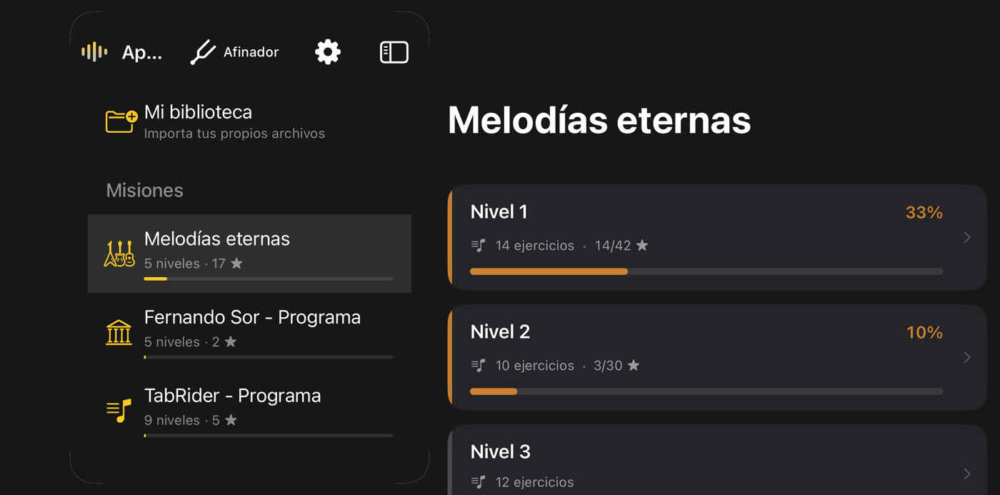
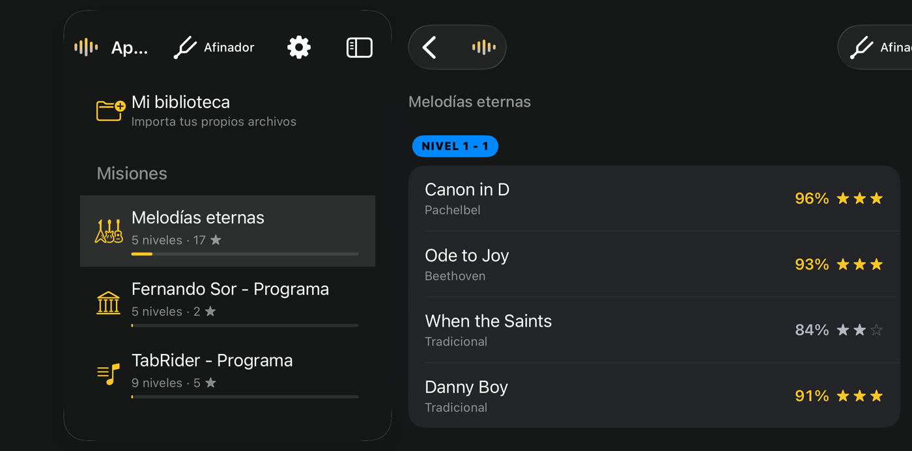
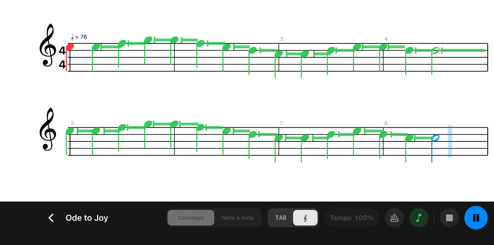
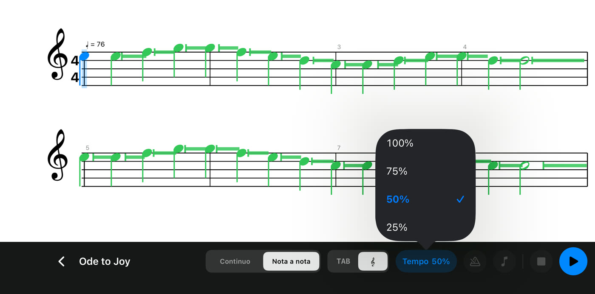
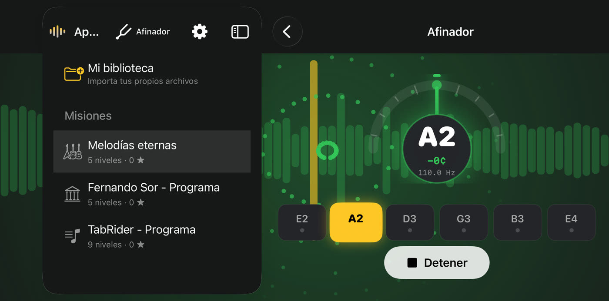

Toca.
TabRider te escucha.
Coge tu guitarra y toca. TabRider oye cada nota a través de tu móvil o tableta, sigue la partitura contigo y desbloquea nueva música a medida que mejoras.
 Próximamente
Próximamente

Cómo funciona

PASO 1
Elige una pieza
361 ejercicios en tres misiones: melodías eternas como Para Elisa, Greensleeves y Danny Boy, los estudios clásicos de Fernando Sor y un programa paso a paso de escalas, acordes, arpegios, fingerpicking, ritmo y solos.
PASO 2
Toca frente al micrófono
Sin cables ni ajustes. Toca tu guitarra acústica o clásica cerca de tu móvil o tableta. La partitura avanza contigo y cada nota se pone verde en cuanto TabRider la oye.

PASO 3
Gana estrellas, desbloquea más
Cada intento se puntúa por la nota correcta, el tiempo y cuánto la sostienes. Las estrellas desbloquean la siguiente fila de piezas: siempre hay algo nuevo que tocar.
Todo lo que necesitas para practicar

Tablatura o partitura
Lee tablatura o partitura, y cambia cuando quieras.

Más despacio
En modo Práctica no se puntúa nada. Baja el tempo hasta el 25 %, o deja que el modo Nota a nota te espere en cada nota.

Un afinador integrado
Afina cada cuerda en segundos antes de tocar.
- Tu propia música. Importa archivos de Guitar Pro 6 (.gpx) en Mi biblioteca.
- Metrónomo. Una cuenta previa y un clic constante te mantienen a tempo.
- Privado. El sonido se analiza en tu dispositivo; nunca se graba ni se envía.
- Gratis. Sin cuenta, sin anuncios, sin compras dentro de la app, y funciona sin conexión.
Tu guitarra. Tu ritmo.
Para iPhone y iPad (iOS 17 o posterior) y Android (8.0 o posterior).
Próximamente